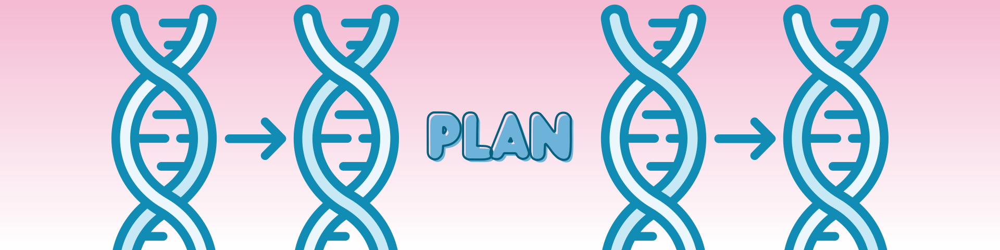
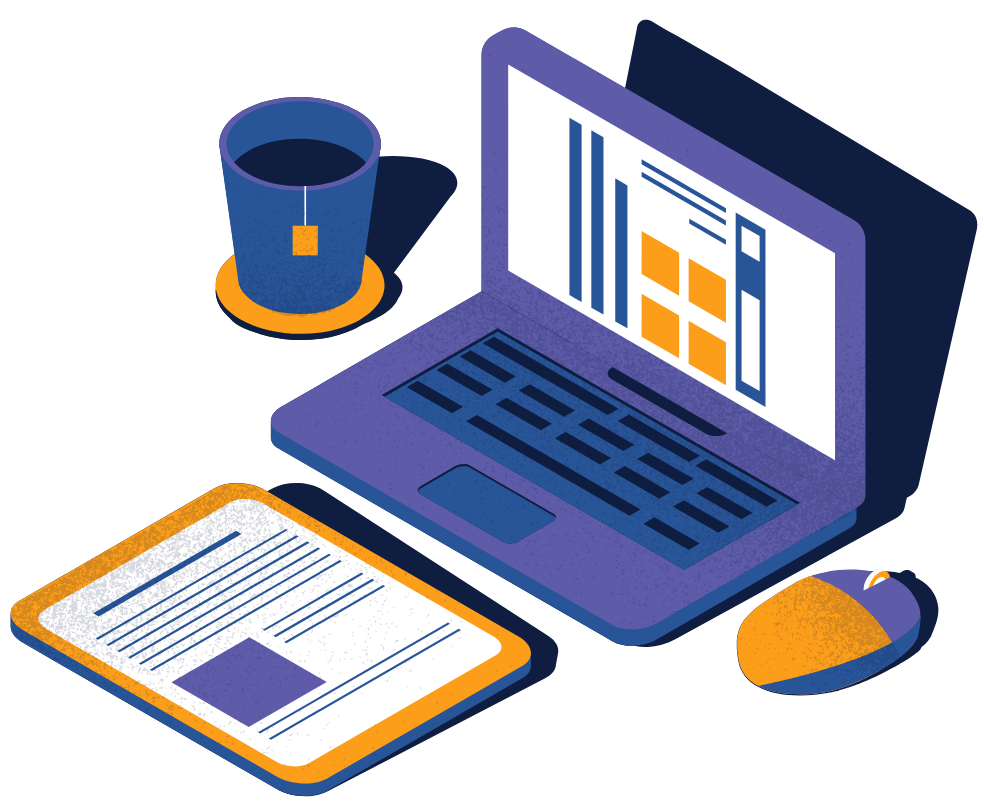
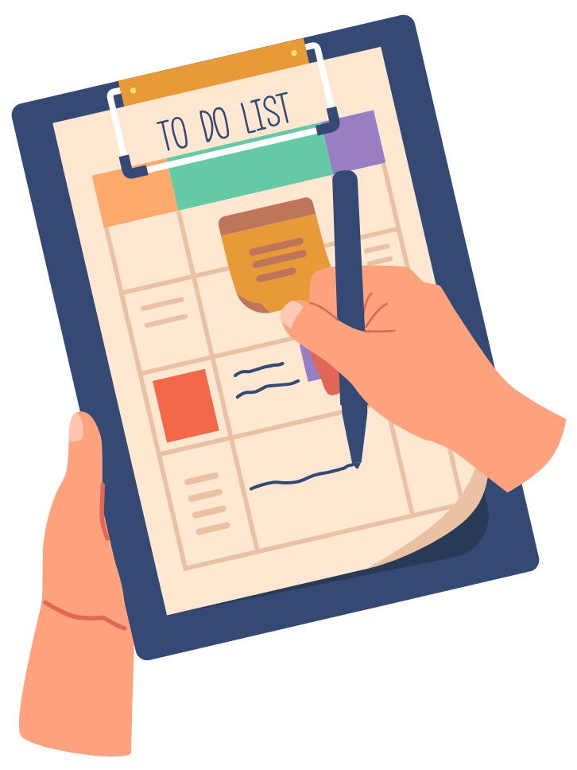
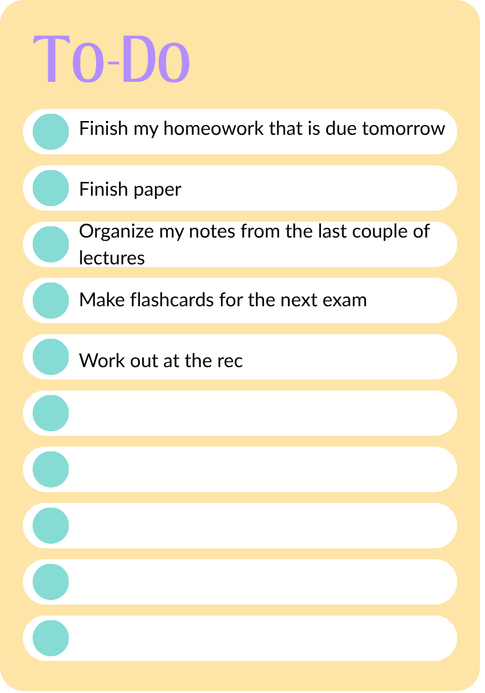
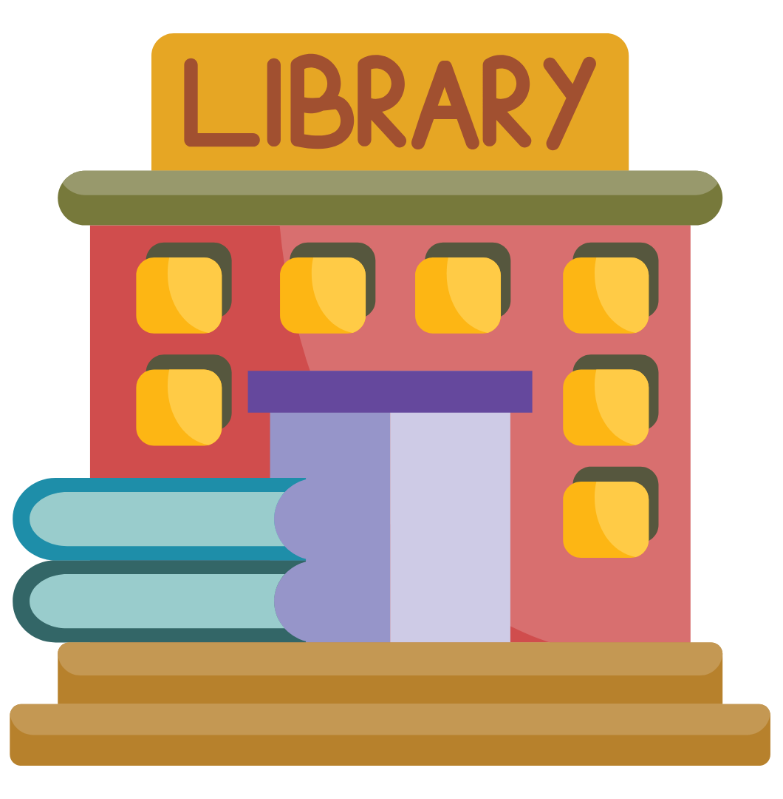

Time to Make a Plan!
A strong plan sets you up for success—not just in studying, but also in class. Preparing ahead of time will help you stay engaged and achieve your learning goals.
Planning for Lecture
Plan time each week to review lecture content beforehand.
When you mentally organize and plan for a lecture, it will be easier to refer back to your notes
and remain engaged. This may help you better relate the lecture to previous knowledge,
strengthening your neuronal connections.
You can do this before class by:
- Doing any pre-reading or pre-class assignments
- Briefly reviewing any other suggested materials
- Reading Learning Objectives
During class, consider adding annotations to posted materials slides instead of or in addition to re-writing information in your notes.

Planning for Studying
Aligning Your Goals with Your Plan
Remember the goals you set in the Aspire Phase. It's important to align your goals with your plans, ensuring that each step brings you closer to success.
How to Do This:
SMART Goal:
"One week before my exam, I will complete the practice exam and/or study guide and visit office hours to review my answers."
Plan to Achieve This Goal:
- Monday: Take the practice exam and review my answers to identify areas
where I need more understanding.
- After reviewing, check Canvas for available office hours from professors, TAs, or LAs.
- Look for office hours that fit my schedule, especially after my 9 AM class.
- Tuesday: After my 9 AM class, attend my LA's office hours to go over my
questions.
- If I still have questions, prepare for the professor's office hours the next day.
- Wednesday: Attend the professor's office hours to clarify any remaining
uncertainties.
- Review notes from office hours and reinforce learning with additional study strategies.

Are you ready to create a study plan?
If not, make a to do list first. This can help reduce anxiety and break upcoming tasks into manageable steps by listing and prioritizing subjects based on deadlines, importance, and time required. Here is an example of a possible To Do List.

Creating a study plan:

Things to consider as you make a study plan:
- Timing:
- Pick a time to study when you are most alert.
- Engage in multiple, spaced study sessions rather than cramming.
- Take breaks!
- Environment
- Determine what usually distracts you, and make a plan to minimize these distractions.
- Consider where you can study that will allow you to be both comfortable and focused.
*Return to your Canvas Assignment*
Create a study plan for next week (just for this course): make a list of what you will study, how, and with what timing.
After you create a plan, you should review it frequently to ensure it will work
Review
Once you have a plan, take a moment to look it over closely. Ask yourself:
- Is the plan is specific enough?
- Did I include actionable steps?
- Are my goals achievable?
- Do I have reasonable expectations?
- If I accomplish this plan, will this help me make progress towards my bigger goal?
If your answer to any of these is "no", then, go back and revise the plan.

*Return to your Canvas Assignment*
Canvas Task: Review your plan and describe in one sentence how it will help you progress towards achieving your aspirational goal.